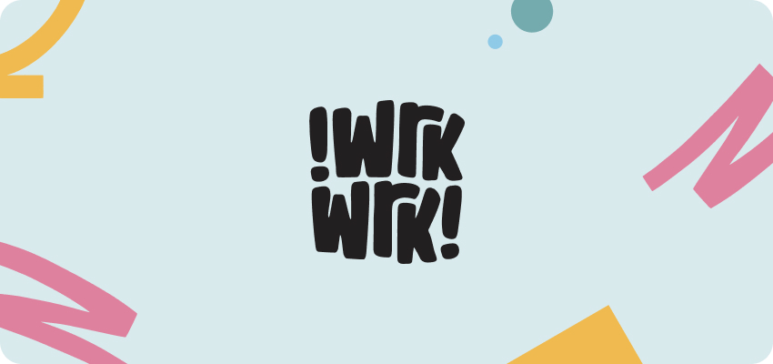

<!--#set var="title" value="Brand story" -->
<!--#include virtual="/parts/header.html" -->
<!-- класс brand-page служит только для background, его можно повесить просто на body -->
<article class="brand-page">
    <!--#include virtual="/parts/header-block.html" -->
    <div class="container">
        <div class="page-inner">
            <div class="page-content">
                <h2 class="title brand-page__title">Brand Story</h2>
                <!-- class="page-content__inner" класс в котором будет контент вставлен через the_content; -->
                <div class="page-content__inner">
                    <p>Welcome to WrkWrk, home to almost 3,000 experienced temp staff across the country. Whether you’re a client looking for reliable and capable agency staff, or an individual looking for flexible and exciting work opportunities, we’ve got you covered. We’re dedicated to making work, work for you!</p>
                    <p>
                        
                    </p>
                    
                    <p>You might be wondering how we got here, and why we’ve changed our name. Get The Shift’s was the baby of our CEO and founder Hannah Wrixon, and frankly, that baby has grown up. Now, it’s time for Get The Shifts to spread its wings and explore new places. While we loved our cheeky company name (though we didn’t love telling our parents we were going to get the shift for the third time that week), we realised that our baby was destined for bigger things, like seeing Europe, and what good parent would hold back their baby? That’s why we’re delighted to adopt a more universal branding, so we can grow to welcome workers all across the world. Rebranding to WrkWrk helps us to reach a more diverse and global community of people, where we can provide new and interesting work opportunities to everyone.</p>
                    <p>We’re determined not to lose our Irish charm however, and though our ‘Superstars’ have become ‘WrkStars’, they’re still the same sparkling personalities with the same brilliant experience. If you’re a client or staff member of ours wondering what this means for you, it’s a good thing! Think of it like levelling up. Moving to WrkWrk means that employers and employees alike will have a wider pool of job opportunities and staff members to choose from. The more the merrier!</p>
                    <p>
                        
                        
                    </p>
                    <p>So, what does the future hold? We’re not set on world domination just yet, but we are going to keep on sharing fun and flexible work with whoever we can. And hey, when you go travelling, why not take WrkWrk with you? Let’s embark on this adventure together. </p>
    
                </div>
            </div>

        </div>
    </div>
    <!--#include virtual="/parts/footer-block.html" -->
</article>


<!--#include virtual="/parts/footer.html" -->
